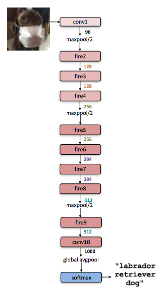
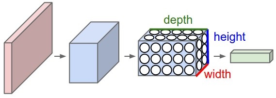

SqueezeNet
SqueezeNet achieves AlexNet-level accuracy on ImageNet with 50x fewer parameters, offering at least three advantages:
- Less communications across servers
- less bandwidth to export model
- more feasible to deploy
The SqueezeNetarchitecture is available for download here
Strategy
- Replace \(3\times3\) filters with \(1\times1\) filters: 9X fewer parameters needed
- Decrease the number of input channels to \(3\times3\) filters
- Downsample late: large activation maps lead to higher accuracy.
The Fire module
A Fire module is comprised of a squeeze layer (which has only 1x1 filters), feeding into an expand layer that has a mix of 1x1 and 3x3 convolution filters.

The following function defines Fire Module by TensorFlow in Python
def fire_module(x,inp,sp,e11p,e33p):
with tf.variable_scope("fire"):
with tf.variable_scope("squeeze"):
W = tf.get_variable("weights",shape=[1,1,inp,sp])
b = tf.get_variable("bias",shape=[sp])
s = tf.nn.conv2d(x,W,[1,1,1,1],"VALID")+b
s = tf.nn.relu(s)
with tf.variable_scope("e11"):
W = tf.get_variable("weights",shape=[1,1,sp,e11p])
b = tf.get_variable("bias",shape=[e11p])
e11 = tf.nn.conv2d(s,W,[1,1,1,1],"VALID")+b
e11 = tf.nn.relu(e11)
with tf.variable_scope("e33"):
W = tf.get_variable("weights",shape=[3,3,sp,e33p])
b = tf.get_variable("bias",shape=[e33p])
e33 = tf.nn.conv2d(s,W,[1,1,1,1],"SAME")+b
e33 = tf.nn.relu(e33)
return tf.concat([e11,e33],3)
The SqueezeNet Architecture
SqueezeNet begins with a standalone convolution layer (conv1), followed by 8 Fire modules (fire2-9), ending with a final conv layer (conv10).

Reference
- Iandola F N, Han S, Moskewicz M W, et al. 2016. SqueezeNet- AlexNet-level accuracy with 50x fewer parameters and < 0.5 MB model size
Image Captioning
Vanilla RNN

LSTM
Long Short Term Memory (LSTM)
Backward flow of gradients in RNN can explode or vanish.
Exploding is controlled with gradient clipping. Vanishing is controlled with additive interactions (LSTM)

COCO
COCO（Common Objects in Context） is a large-scale object detection(物体检测), semantic segmentation(语义分割), and captioning dataset. COCO has several main features: Object segmentation, Recognition in context.
Reference
- Tsung Y L, Michael M, Serge B, et al. Microsoft COCO: Common Objects in Context. arXiv:1405.0312
- Karpathy et al. Deep Visual-Semantic Alignments for Generating Image Descriptions, CVPR 2015
Batch Normalization
The idea is relatively straightforward. Machine learning methods tend to work better when their input data consists of uncorrelated features with zero mean and unit variance. When training a neural network, we can preprocess the data before feeding it to the network to explicitly decorrelate its features; this will ensure that the first layer of the network sees data that follows a nice distribution. However even if we preprocess the input data, the activations at deeper layers of the network will likely no longer be decorrelated and will no longer have zero mean or unit variance since they are output from earlier layers in the network. Even worse, during the training process the distribution of features at each layer of the network will shift as the weights of each layer are updated.
Covariate Shift
While stochastic gradient is simple and effective, it requires careful tuning of the model hyper-parameters, specifically the learning rate used in optimization, as well as the initial values for the model parameters. The train- ing is complicated by the fact that the inputs to each layer are affected by the parameters of all preceding layers – so that small changes to the network parameters amplify as the network becomes deeper.
The change in the distribution of layers' inputs presents a problem because the layers need to continuously adapt to the new distribution. When the input distribution to a learning system changes, it is said to experience covariate shift. This is typically handled via domain adaption.
Internal Covariate Shift refers to the change in the distribution of internal nodes of a deep network due to change in network parameters, in the course of training. Batch Normalization, that takes a step towards reducing internal covariance shift, and in doing so dramatically accelerates the training of deep neural nets. It accomplishes this via a normalization step that fixes the means and variances of layer inputs. It also has a beneficial effect on the dependence of gradients on the scale of the parameters or of their initial values. This allows us to use much higher learning rates without the risk of divergence.
Algorithm
Forward
Given some input values \(\mathcal{B} = x^{(1)},...,x^{(m)}\) over a mini-batch in the layer \(l\) of neural network;
\[\mu_{\mathcal{B}} = \frac{1}{m}\sum_i^m x_i \text{ (mini-batch mean)}\\
\sigma^2=\frac{1}{m}\sum_i(x_i-\mu_{\mathcal{B}})^2 \text{ (mini-batch variance)}\\
\hat{x}_i=\frac{x_i-\mu_{\mathcal{B}}}{\sqrt{\sigma_{\mathcal{\mathcal{B}}}^2+\varepsilon}} \text{ (normalize)}\\
y_i=\gamma \hat{x}_i+\beta \text{ (scale and shift)}
\]
At each iteration, we update the running averages for mean and variance using an exponential decay based on the momentum parameter:
running_mean = momentum * running_mean + (1 - momentum) * sample_mean
running_var = momentum * running_var + (1 - momentum) * sample_var
Backward

Test time
Using trained runing_mean and running_var to take forward step.
TensorFlow
Applying Batch Normalization in TensorFlow Model is very convenient. Just add one line of code in TensorFlow: tf.nn.batch-normalization.
Reference
Sergey Ioffe, Christian Szegedy. 2015. Batch Normalization: Accelerating Deep Network Training by Reducing Internal Covariate Shift. arXiv:1501.02167v3
Convolutional Neural Networks
Architecture
Three main types of layers to build ConvNet architectures: Convolutional Layer, Pooling Layer and Fully-Connected Layer.
The layers of a ConvNet have neurons arranged in 3 dimensions: width, height, depth.

A simple ConvNet for CIFAR-10 classification could have the architecture as follows:
- INPUT [width x height x color channel] will hold the raw pixel values of the image, in this case an image of width, height, and with three color channels R,G,B.
- CONV layer will compute the output of neurons that are connected to local regions in the input, each computing a dot product between their weights and a small region they are connected to in the input volume.
- RELU layer will apply an elementwise activation function, such as the
max(0,x)thresholding at zero. - POOL layer will perform a downsampling operation along the spatial dimensions (width, height).
- FC (i.e. fully-connected) layer will compute the class scores, where each score corresponding to the 10 categories of CIFAR-10. As with ordinary Neural Networks and as the name implies, each neuron in this layer will be connected to all the numbers in the previous volume.
Conv layers
Four hyperparameters depth(K), spatial extent(\(F\)), stride(\(S\)) and zero-padding(\(P\)) control the size of the output volume from the input volume (\(W\)).
Summary. To summarize, the Conv Layer:
- Accepts a volume of size \(W_1 \times H_1 \times D_1\)
- Requires four hyperparameters:
- Number of filters \(K\),
- their spatial extent \(F\),
- the stride \(S\),
- the amount of zero padding \(P\).
- Produces a volume of size \(W_2 \times H_2 \times D_2\) where:
- \(W_2 = (W_1 - F + 2P)/S + 1\)
- \(H_2 = (H_1 - F + 2P)/S + 1\) (i.e. width and height are computed equally by symmetry)
- \(D_2 = K\)
- With parameter sharing, it introduces \(F \cdot F \cdot D_1\) weights per filter, for a total of \((F \cdot F \cdot D_1) \cdot K\) weights and \(K\) biases.
- In the output volume, the \(d\)-th depth slice (of size \(W_2 \times H_2\)) is the result of performing a valid convolution of the \(d\)-th filter over the input volume with a stride of \(S\), and then offset by \(d\)-th bias.
parameter sharing: the neurons in each depth slice(i.e \(K\)) to use the same weights and bias.
Pooling
max pooling is the most common function performed on the pooling units, others like average pooling or L2-norm pooling is work worse in practice. And Many people dislike the pooling operation and think that we can get away without it.
Fully-connected layers
Neurons in a fully connected layer have full connections to all activations in the previous layer.
Layer Patterns
The most common form of a ConvNet architecture stacks a few CONV-RELU layers, follows them with POOL layers, and repeats this pattern until the image has been merged spatially to a small size. At some point, it is common to transition to fully-connected layers. The last fully-connected layer holds the output, such as the class scores. In other words, the most common ConvNet architecture follows the pattern:
\[INPUT \rightarrow [[CONV \rightarrow RELU]*N \rightarrow POOL?]*M \rightarrow [FC -> RELU]*K \rightarrow FC\]
where the * indicates repetition, and the POOL? indicates an optional pooling layer. Moreover, N >= 0 (and usually N <= 3), M >= 0, K >= 0 (and usually K < 3). For example, here are some common ConvNet architectures you may see that follow this pattern:
Note: INPUT -> FC, implements a linear classifier. Here N = M = K = 0.
Note: Prefer a stack of small filter CONV to one large receptive field CONV layer, because of few parameters needed and expressing more powerful features of the input.
Layer Sizing Patterns
- input layer: Common numbers include 32 (e.g. CIFAR-10), 64, 96 (e.g. STL-10), or 224 (e.g. common ImageNet ConvNets), 384, and 512.
- conv layers: small filters(\(3\times3\) or \(5\times5\)), with \(S=1\). Crucially, padding the input volume with zeros in such way that the conv layer does not alter the spatial dimensions of the input.
- pool layers: use max-pooling with \(F=2, S=2\) or \(F=3, S=2\)
Computational Considerations
The memory bottleneck is the largest bottleneck when constructing ConvNet architectures.

Copyright © 2015 Powered by MWeb, Theme used GitHub CSS.